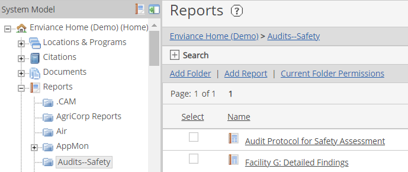
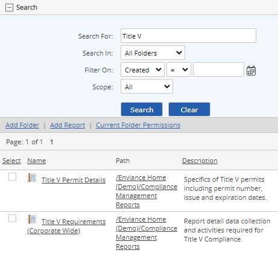

The Reports library contains a library of reports that have been pre-configured for your system to represent the types of reports your organization uses most frequently, extracting the data stored by your organization.
The pre-configured reports that are available for you to run are set up by your system administrator. They may be run by any user who has View permissions on the report.
In most cases, to run a report, you only need to choose the dates to include in the report and select the desired output format.
If you have reporting needs that are not met by the report types currently available in the Reports library, see your administrator about creating a new report for your needs.
To view available reports in the Reports library:
In the System Model page, select Reports on the tree.
The folders to which you have permissions are displayed. Expand the Reports section of the tree to see the report folders.

Browse report folders by selecting them to display the contents.
The path to the current folder is also shown in the status bar below the Reports head. You can click any part of the path to navigate up the folder tree.
See Managing Reports: Standard Report Types in the Administrators Guide for more information about the different types of reports and report options available.
